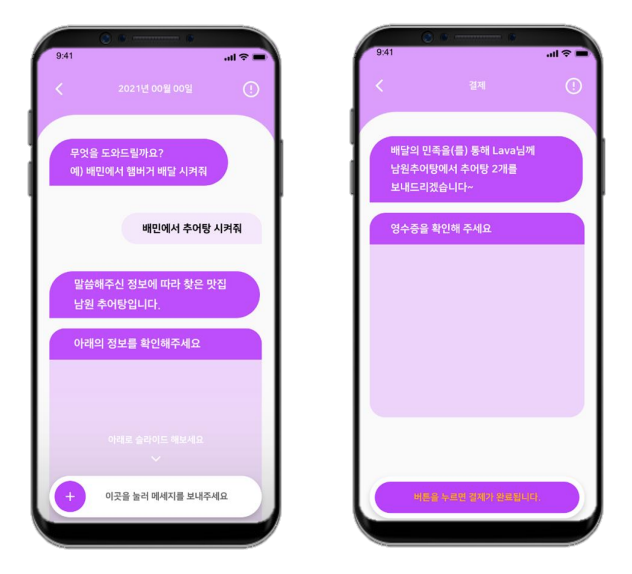

Started from 0, Ending at Deomo Day
Dan A | 2020.08 ~ 2021.05 | Korea
Having my career goal in mind, I decided to launch my own start up during the gap year I took due to COVID19 pandemic.
With no experience of business development at all, I built the team and fearlessly started the business.
I have failed, faced hardships and had financial challenge. Yet, I did not give up but learned from my experiences.
At last, I acheived to give successful Inverstor Relations pitching to investors in Demo Day.
Summary
- Interacted with local merchandises, cafes and restaurants successfully to test the service with MVP
- Contributed in public relations, business analysis, service design, frontend and backend
development of the app using REST API, React, Typescript, Django, SQL and CSS.
- Selected for Science Belt Start Up Support Program by Cheongju University
- Competed in a competition and achieved a IR/BM development support as well as a
final IR pitching team on Demo Day by B.Smart Accelerator
- Completed Entrepreneurial Education Program by Gyeonggi Start Up Campus on defining
a problem, developing a solution and strategies, market research, business analysis and more
KouponBank
Instead of approaching from the problem, started from my idea, "Wouldn't it be better if there is a mobile platform for local merchandises to advertise their store easily?"
Problem
For local merchandises, even if they advertise their store in their region, the result was not cost-effective.
Solution
A platform like a "Yelp", but with local merchandises could advertise their store or event reginally using their coupons.
Role
- Business development
- Frontend and Backend development
- Market and user research with visitng 20+ local merchandises as well as survey from random 166 people.
Results
There was no need of regional advertisement online as their main target is their frequent customers who normally know any news of the store earliest.
Summary of What I have learned
The problem of who my service targets needs to be the start point of developing solution.
Would-U-Book
Pivoted from the last service, Kouponbank. Chaging the etiquette as a service to solve the problem of the cafe owners.
Problem
Near university districts in Seoul, customers have to wander to several stores to find the seat to dine in because of "cafe studying" customers who stay in the cafe for more than 3 hours in average.
Even "cafe studying" customers also feel pressure if they are staying for hours.
The cafe owners also lose their potential profits with low table rotation rate.
Solution
A platform where you can reserve table for a period of time which can be enlongated with additional purchase of menu.
Customers can make sure that the cafe's seat availabilty as well as relieving the mental pressure for the amount of time they are staying.
Cafe owners will be benefited by increasing number of customer per table and hour.
Role
- Business development
- Frontend and Backend development
- Gathered each of UX and UI designer
- Market and user research with visitng 5 local cafes in Suk Myeong University district.
Results
Cafe owners treated the connection and sustainabilty between the cafe and students more than the profit, and did not want to ask student to pay more even though they lose their profits.
Summary of What I have learned
I need to consider the market's characteristics that the service will be targeting.
OdaOrda
Reset to the startpoint, brainstormed from the fundamentals and my goal, and won the chance to participate in Demo Day.
Problem
A lot of seniors (65 year old +) in Korea could use the simple apps and functions on the phone such as call and texts.
Yet, they have a hardship to do in other services / apps, needing a help from close people such as younger friends, child and grandchild to be fully benefited from the technologies.
From user reserach, most of seniors answered that they are afraid of processing and dealing with a lot of information at the same time.
Solution
A texting platform where seniors can simply request a mobile service they would like to get with call or texting to us, and we will order the service on the behalf of the seniors.
Role
- Business development
- Frontend and Backend development
- IR pitching preparation
- Building Business Plan
- Uesr and market reserach to 56 of random people from 40 years old +, where we earned around half of participant's pre-sign up for the service.
Results
- Won the competition to participate in Demo Day by B.Smart Accelerator.
- Positive feedback on the problem that we are trying to solve, and the solution in general
- Yet, there is a worry of the service need to cover too broad area of mobile services and the level of technology usage of seniors varies a lot
- Might be needing a great amount of seed money in the beginning before automating the system
Summary of What I have learned
The service target has to be as specific as possible in the beginning.
The pause of the Journey
As we wanted to make an improvement of the service, team had to be dissipated with teammates' personal situation including finishing up the miliatary duty.
Thus, I decided to take this pause as time to 1.finish my college and earn degree, 2.gain hands-on experience in the industry, 3.save the seed money.
I will continue this journey again when I achieve what I have planned!